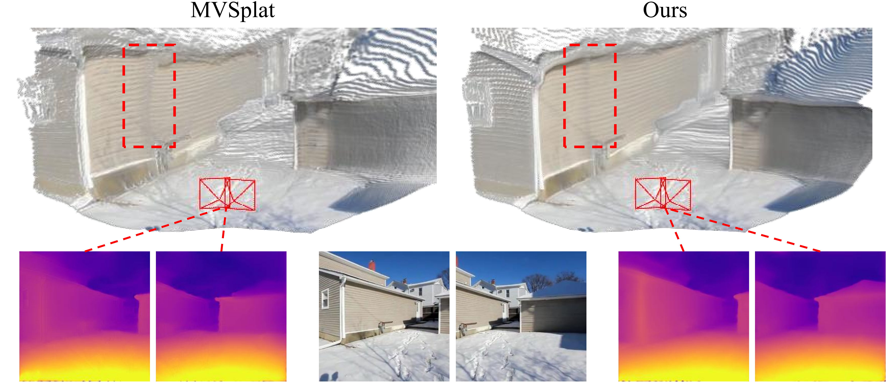
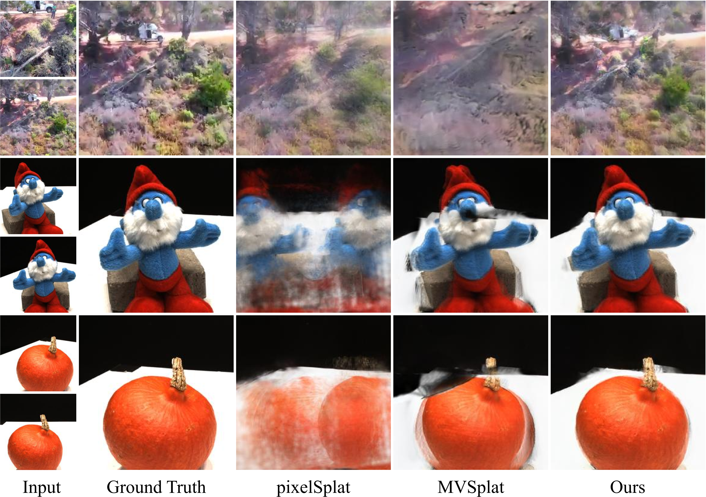

TL;DR
Abstract
Compared with previous 3D reconstruction methods like Nerf, recent Generalizable 3D Gaussian Splatting (G-3DGS) methods demonstrate impressive efficiency even in the sparse-view setting. However, the promising reconstruction performance of existing G-3DGS methods relies heavily on accurate multi-view feature matching, which is quite challenging. Especially for the scenes that have many non-overlapping areas between various views and contain numerous similar regions, the matching performance of existing methods is poor and the reconstruction precision is limited. To address this problem, we develop a strategy that utilizes a predicted depth confidence map to guide accurate local feature matching. In addition, we propose to utilize the knowledge of existing monocular depth estimation models as prior to boost the depth estimation precision in non-overlapping areas between views. Combining the proposed strategies, we present a novel G-3DGS method named TranSplat, which obtains the best performance on both the RealEstate10K and ACID benchmarks while maintaining competitive speed and presenting strong cross-dataset generalization ability.
Architecture
Comparisons with the State-of-the-art
We present qualitative comparisons with the following state-of-the-art models:
- pixelSplat: The latest feed-forward 3D Gaussians model with epipolar Transformer.
- MVSplat: The latest SOTA feed-forward 3D Gaussians model with costvolume.
Geometry Reconstruction
Our TranSplat generates impressive 3D Gaussian primitives which is atrributed to our high-quality depth estimation results.
Cross-dataset Generalization
Our proposed TranSplat demonstrates significant superiority in generalizing to out-of-distribution novel scenes.
